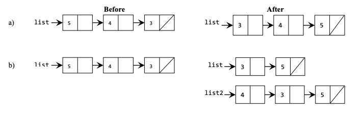
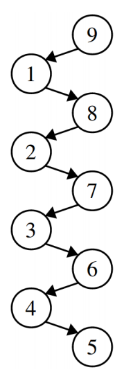
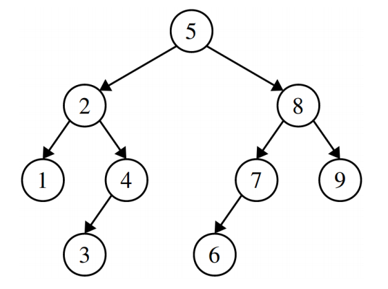
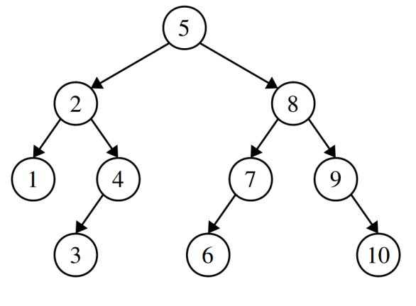

These problems will give you more practice with concepts we've discussed so far in class.
1) Longest Common Subsequence
Topic: Recursive Backtracking
Write a recursive function named longestCommonSubsequence that returns the longest common subsequence of two strings passed as arguments. Some example function calls and return values are shown below.
Recall that if a string is a subsequence of another, each of its letters occurs in the longer string in the same order, but not necessarily consecutively.
Hint: In the recursive case, compare the first character of each string. What one recursive call can you make if they are the same? What two recursive calls do you try if they are different?
longestCommonSubsequence("cs106a", "cs106b") --> "cs106"
longestCommonSubsequence("nick", "julie") --> "i"
longestCommonSubsequence("karel", "c++") --> ""
longestCommonSubsequence("she sells", "seashells") --> "sesells"
string longestCommonSubsequence(string s1, string s2) {
if (s1.length() == 0 || s2.length() == 0) {
return "";
} else if (s1[0] == s2[0]) {
return s1[0] + longestCommonSubsequence(s1.substr(1),
s2.substr(1));
} else {
string choice1 = longestCommonSubsequence(s1, s2.substr(1));
string choice2 = longestCommonSubsequence(s1.substr(1), s2);
if (choice1.length() >= choice2.length()) {
return choice1;
} else {
return choice2;
}
}
}
2) Cracking Passwords
Topic: Recursive Backtracking
Write a function crack that takes in the maximum length a site allows for a user's password and tries to find the password into an account by using recursive backtracking to attempt all possible passwords up to that length (inclusive). Assume you have access to the function bool login(string password) that returns true if a password is correct. You can also assume that the passwords are entirely alphabetic and case-sensitive. You should return the correct password you find, or the empty string if you cannot find the password. You should return the empty string if the maximum length passed is 0 and raise an error if the length is negative.
Security note: The ease with which computers can brute-force passwords is the reason why login systems usually permit only a certain number of login attempts at a time before timing out. It’s also why long passwords that contain a variety of different characters are better! Try experimenting with how long it takes to crack longer and more complex passwords. See the comic here for more information: https://xkcd.com/936/
string crackHelper(string soFar, int maxLength) {
if (login(soFar)) {
return soFar;
}
if (soFar.size() == maxLength) {
return "";
}
for (char c = 'a'; c <= 'z'; c++) {
string password = crackHelper (soFar + c, maxLength);
if (password != "") {
return password;
}
// Also check uppercase
char upperC = toupper(c);
password = crackHelper (soFar + upperC, maxLength);
if (password != "") {
return password;
}
}
return "";
}
string crack(int maxLength) {
if (maxLength < 0) {
error("max length cannot be negative!);";
}
return crackHelper("", maxLength);
}
3) Tracing Pointers by Reference
One of the trickier nuances of linked lists comes up when we start passing around pointers as parameters by reference. To better understand exactly what that’s all about, trace through the following code and show what it prints out. Also, identify any memory leaks that occur in the program.
void confuse(Node* list) {
list->data = 137;
}
void befuddle(Node* list) {
list = new Node;
list->data = 42;
list->next = nullptr;
}
void confound(Node* list) {
list->next = new Node;
list->next->data = 2718;
list->next->next = nullptr;
}
void bamboozle(Node*& list) {
list->data = 42;
}
void mystify(Node*& list) {
list = new Node;
list->data = 161;
list->next = nullptr;
}
int main() {
Node* list = /* some logic to make the list 1 -> 3 -> 5 -> null */
confuse(list);
printList(list); // defined at beginning of section handout
befuddle(list);
printList(list);
confound(list);
printList(list);
bamboozle(list);
printList(list);
mystify(list);
printList(list);
freeList(list); // defined at beginning of section handout
return 0;
}
Let’s go through this one step at a time.
- The call to
confuseupdates the first element of the list to store 137, so the call toprintListwill print out 137, 3, 5. Although the argument is passed by value, because both pointers point to the same Node in memory, the original list will also see a different value. - The call to
befuddletakes its argument by value. That means it’s working with a copy of the pointer to the first element of the list, so when we set list to be a new node, it doesn’t change where the list variable back in main is pointing. The node created in this function is leaked, and the next call toprintListwill print out 137, 3, 5. - The call to
confoundtakes its argument by value. However, when it writes to list->next, it’s following the pointer to the first element of the linked list and changing the actual linked list node it finds there. This means that the list is modified by dropping off the 3 and the 5 (that memory gets leaked) and replacing it with a node containing 2718. Therefore, the next call toprintListwill print out 137, 2718. - The call to
bamboozletakes its argument by reference, but notice that it never actually reassigns the next pointer. However, it does change the memory in the node at the front of the list to hold 42, so the next call toprintListwill print 42, 2718. - The call to
mystifytakes its argument by reference, and therefore, when it reassignslist, it really is changing wherelistback in main is pointing. This leaks the memory for the nodes containing 42 and 2718. The variablelistback in main is changed to point at a new node containing 161, so the final call toprintListprints 161. - Finally, we free that one-element list. Overall, we’ve leaked a lot of memory!
4) Inserting into a Linked List (insert.cpp)
Write a function named insert that accepts a reference to a StringNode pointer representing the front of a linked list, along with an index and a string value. Your function should insert the given value into a new node at the specified position of the list. For example, suppose the list passed to your function contains the following sequence of values:
{ "Katherine", "Julie", "Kate" }
The call of insert(front, 2, "Mehran") should change the list to store the following:
{ "Katherine", "Julie", "Mehran", "Kate" }
The other values in the list should retain the same order as in the original list. You may assume that the index passed is between 0 and the existing size of the list, inclusive.
Constraints: Do not modify the data field of existing nodes; change the list by changing pointers only. Do not use any auxiliary data structures to solve this problem (no array, Vector, Stack, Queue, string, etc).
void insert(StringNode*& front, int index, string value)
void insert(StringNode*& front, int index, string value) {
if (index == 0) {
front = new StringNode(value, front);
} else {
StringNode* temp = front;
for (int i = 0; i < index - 1; i++) {
temp = temp->next;
}
temp->next = new StringNode(value, temp->next);
}
}
5) Remove All Threshold (threshold.cpp)
Write a function removeAllThreshold that removes all occurrences of a given double value +/- a threshold value from the list. For example, if a list contains the following values:
The call of removeAllThreshold(front, 3.0, .3) where front denotes a pointer to the front of list, would remove all occurrences of the value 3.0 +/- .3 (corresponding to the underlined values in the above example) from the list, yielding the following list:
If the list is empty or values within the given range don't appear in the list, then the list should not be changed by your function. You should preserve the original order of the list. You should implement your code to match the following prototype
void removeAllThreshold(DoubleNode*& front, double value, double threshold)
bool valueWithinThreshold (double value, double target, double threshold) {
return value >= target - threshold && value <= target + threshold;
}
void removeAllThreshold(DoubleNode*& front, double value, double threshold) {
if (front == nullptr)
return;
DoubleNode* current = front->next;
DoubleNode* prev = front;
while (current != nullptr) {
DoubleNode* next = current->next;
if (valueWithinThreshold(current->data, value, threshold)) {
delete current;
prev->next = next;
} else {
prev = current;
}
current = next;
}
// edge case for when front's value is also within threshold.
if (valueWithinThreshold(front->data, value, threshold)) {
DoubleNode* next = front->next;
delete front;
front = next;
}
}
6) Double List
Write a function that takes a pointer to the front of a linked list of integers and appends a copy of the original sequence to the end of the list. For example, suppose you're given the following list:
{1, 3, 2, 7}
After a call to your function, the list's contents would be:
{1, 3, 2, 7, 1, 3, 2, 7}
Do not use any auxiliary data structures to solve this problem. You should only construct one additional node for each element in the original list. Your function should run in O(n) time where n is the number of nodes in the original list. You should implement your code to match the following prototype
void doubleList(Node*& front)
void doubleList(Node*& front) {
if (front != nullptr) {
Node *half2 = new Node(front->data, nullptr);
Node *back = half2;
Node *current = front;
while (current->next != nullptr) {
current = current->next;
back->next = new Node(current->data, nullptr);
back = back->next;
}
current->next = half2;
}
}
7) Rewiring Linked Lists
For each of the following diagrams, write the code that will produce the given "after" result from the given "before" starting point by modifying the links between the nodes shown and/or creating new nodes as needed. There may be more than one way to write the code, but do not change the data field of any existing node. If a variable doesn't appear in the "after" picture, it doesn't matter what value it has after changes are made.

a)
Node *temp = list->next->next;
temp->next = list->next;
list->next->next = list;
list->next->next->next = nullptr;
list = temp;
b)
list->next->next->next = list;
list = list->next->next;
Node *list2 = list->next->next;
list->next->next = nullptr;
8) Linked List Mechanics
This section handout is almost exclusively about linked lists, so before we jump into some of their applications, let’s start off by reviewing some of the basic mechanics about how they work!
To begin with, let’s imagine we have a linked list of integers. Write a function
int sumOfElementsIn(Node* list);
that adds up the values of all the elements in the linked list. Write this function two ways – first, do it iteratively; then, do it recursively. Which one did you think was easier to write? Why?
Next, write a function
Node* lastElementOf(Node* list);
that returns a pointer to the last element of a linked list (and reports an error if the list is empty). Again, write this function two ways, iteratively and recursively. Which one did you think was easier to write?
Summing List Elements
/* Iterative version */
int sumOfElementsIn(Node* list) {
int result = 0;
for (Node* curr = list; curr != nullptr; curr = curr->next) {
result += curr->data;
}
return result;
}
/* Recursive version. */
int sumOfElementsIn(Node* list) {
/* The sum of the elements in an empty list is zero. */
if (list == nullptr) return 0;
/* The sum of the elements in a nonempty list is the sum of the elements in
* the first node plus the sum of the remaining elements.
*/
return list->data + sumOfElementsIn(list->next);
}
Finding the Last List Element
/* Iterative version */
Node* lastElementOf(Node* list) {
if (list == nullptr) error("Empty lists have no last element.");
/* Loop forward until the current node next pointer is null. That’s the
* point where the list ends.
*/
Node* result = list;
while (result->next != nullptr) {
result = result->next;
}
return result;
}
/* Recursive version. */
Node* lastElementOf(Node* list) {
/* Base Case 1: The empty list has no last element. */
if (list == nullptr) error("Nothing can come from nothing.");
/* Base Case 2: The only element of a one-element list is the last element. */
if (list->next == nullptr) return list;
/* Recursive Case: There’s at least two nodes in this list. The last element
* of the overall list is the last element of the list you get when you drop
* off the first element.
*/
return lastElementOf(list->next);
}
9) The Notorious RBQ, Revisited
Topics: Classes, dynamic memory allocation, pointers
Remember our good friend the RingBufferQueue from last section? Check out the problem definition from last week if you want a quick refresher. Last time we visited the RBQ it had fixed capacity – that is, it couldn't grow in size after it was initially created. How limiting! With our newfound pointer and dynamic allocation skills, we can remove this limitation on the RBQ and make it fully functional!
Add functionality to the class RingBufferQueue from the previous section problem so that the queue resizes to an array twice as large when it runs out of space. In other words, if asked to enqueue when the queue is full, it will enlarge the array to give it enough capacity.
For example, say our queue can hold 5 elements and we enqueue the five values 10, 20, 30, 40, and 50. Our queue would look like this:
index 0 1 2 3 4
+----+----+----+----+----+
value | 10 | 20 | 30 | 40 | 50 |
+----+----+----+----+----+
^ ^
| |
head tail
If the client tries to enqueue a sixth element of 60, your improved queue class should grow to an array twice as large:
index 0 1 2 3 4 5 6 7 8 9
+----+----+----+----+----+----+----+----+----+----+
value | 10 | 20 | 30 | 40 | 50 | 60 | | | | |
+----+----+----+----+----+----+----+----+----+----+
^ ^
| |
head tail
The preceding is the simpler case to handle. But what about if the queue has wrapped around via a series of enqueues and dequeues? For example, if the queue stores the following five elements:
index 0 1 2 3 4
+----+----+----+----+----+
value | 40 | 50 | 10 | 20 | 30 |
+----+----+----+----+----+
^ ^
| |
tail head
If the client tries to add a sixth element of 60, you cannot simply copy the array as it is shown. If you do so, the head and wrapping will be broken. Instead, copy into the new array so that index 0 always becomes the new head of the queue. The picture will look the same as the previous one with the value 60 at index 5.
Write up the implementation of the new and improved RingBufferQueue. It should have the same members as in the previous problem, but with the new resizing behavior added. You may add new member functions to your class, but you should make them private.
RingBufferQueue.h
#pragma once
#include <iostream>
using namespace std;
class RingBufferQueue {
public:
RingBufferQueue();
~RingBufferQueue();
bool isEmpty() const;
bool isFull() const;
int size() const;
void enqueue(int elem);
int dequeue();
int peek() const;
private:
int* _elements;
int _capacity;
int _size;
int _head;
friend ostream& operator <<(ostream& out, const RingBufferQueue& queue);
void enlarge();
};
RingBufferQueue.cpp
#include "RingBufferQueue.h"
static int kDefaultCapacity = 5;
RingBufferQueue::RingBufferQueue() {
_capacity = kDefaultCapacity;
_elements = new int[_capacity];
_head = 0;
_size = 0;
}
RingBufferQueue::~RingBufferQueue() {
delete[] _elements;
}
void RingBufferQueue::enqueue(int elem) {
if (isFull()) {
enlarge();
}
int tail = (_head + _size) % _capacity;
_elements[tail] = elem;
_size++;
}
int RingBufferQueue::dequeue() {
int front = peek();
_head = (_head + 1) % _capacity;
_size--;
return front;
}
int RingBufferQueue::peek() const {
if (isEmpty()) {
error("Can't peek at an empty queue!");
}
return _elements[_head];
}
bool RingBufferQueue::isEmpty() const {
return _size == 0;
}
bool RingBufferQueue::isFull() const {
return _size == _capacity;
}
int RingBufferQueue::size() const {
return _size;
}
void RingBufferQueue::enlarge() {
int *larger = new int[_capacity * 2];
for (int i = 0; i < _size; i++) {
larger[i] = _elements[(_head + i) % _capacity];
}
delete[] _elements;
_elements = larger;
_capacity *= 2;
_head = 0;
}
ostream& operator <<(ostream& out, const RingBufferQueue& queue) {
out << "{";
if (!queue.isEmpty()) {
// We can access the inner ‘_elements’ member variables because
// this operator is declared as a friend of the RingBufferQueue class
out << queue._elements[queue._head];
for (int i = 1; i < queue.size(); i++) {
int index = (queue._head + i) % queue._capacity;
out << ", " << queue._elements[index];
}
}
out << "}";
return out;
}
You can also assume the following utility functions have been defined as well:
/* Prints the contents of a linked list, in order. */
void printList(Node* list) {
for (Node* cur = list; cur != nullptr; cur = cur->next) {
cout << cur->data << endl;
}
}
/* Frees all the memory used by a linked list. */
void deleteList(Node* list) {
while (list != nullptr) {
/* Store where to go next, since we're about to blow up our linked
* list node.
*/
Node *next = list->next;
delete list;
list = next;
}
}
10) How Tall is That Tree? (height.cpp)
Write a function
int height(TreeNode* node);
that calculates the height of the provided tree. The height of a tree is defined to be the number of edges along the longest path from the root to a leaf. By definition, an empty tree has a height of -1. A tree of only one node has height 0. A node with one or two leaves as children has height 1, etc.
int height(TreeNode * node) {
if (node == nullptr) {
return -1;
} else {
return 1 + max(height(node->left), height(node->right));
}
}
11) The Ultimate and Penultimate Values (findmax.cpp)
Write a function
TreeNode* biggestNodeIn(TreeNode* root)
that takes as input a pointer to the root of a (nonempty) binary search tree, then returns a pointer to the node containing the largest value in the BST. What is the runtime of your function if the tree is balanced? If it’s imbalanced? Then, write a function
TreeNode* secondBiggestNodeIn(TreeNode* root)
that takes as input a pointer to the root of a BST containing at least two nodes, then returns a pointer to the node containing the second-largest value in the BST. Then answer the same runtime questions posed in the first part of this problem.
We could solve this problem by writing a function that searches over the entire BST looking for the biggest value, but we can do a lot better than this! It turns out that the biggest value in a BST is always the one that you get to by starting at the root and walking to the right until it’s impossible to go any further. Here’s a recursive solution that shows off why this works:
TreeNode* biggestNodeIn(TreeNode* root) {
if (root == nullptr) error("Nothing to see here, folks.");
/* Base case: If the root of the tree has no right child, then the root node
* holds the largest value because everything else is smaller than it.
*/
if (root->right == nullptr) return root;
/* Otherwise, the largest value in the tree is bigger than the root, so it’s
* in the right subtree.
*/
return biggestNodeIn(root->right);
}
And, of course, we should do this iteratively as well, just for funzies:
TreeNode* biggestNodeIn(TreeNode* root) {
if (root == nullptr) {
error("Nothing to see here, folks.");
}
while (root->right != nullptr) {
root = root->right;
}
return root;
}
Getting the second-largest node is a bit trickier simply because there’s more places it can be. The good news is that it’s definitely going to be near the rightmost node – we just need to figure out exactly where.
There are two cases here. First, imagine that the rightmost node does not have a left child. In that case, the second-smallest value must be that node’s parent. Why? Well, its parent has a smaller value, and there are no values between the node and its parent in the tree (do you see why?) That means that the parent holds the second-smallest value. The other option is that the rightmost node does have a left child. The largest value in that subtree is then the second-largest value in the tree, since that’s the largest value smaller than the max. We can use this to write a nice iterative function for this problem that works by walking down the right spine of the tree (that’s the fancy term for the nodes you get by starting at the root and just walking right), tracking the current node and its parent node. Once we get to the largest node, we either go into its left subtree and take the largest value, or we return the parent, whichever is appropriate.
TreeNode* secondBiggestNodeIn(TreeNode* root) {
if (root == nullptr) {
error("Nothing to see here, folks.");
}
TreeNode* prev = nullptr;
TreeNode* curr = root;
while (curr->right != nullptr) {
prev = curr;
curr = curr->right;
}
if (curr->left == nullptr) {
return prev;
} else {
return biggestNodeIn(curr->left);
}
}
Notice that all three of these functions work by walking down the tree, doing a constant amount of work at each node. This means that the runtime is O(h), where h is the height of the tree. In a balanced tree that’s O(log n) work, and in an imbalanced tree that’s O(n) work in the worst-case.
12) Checking BST Validity (bst.cpp)
You are given a pointer to a TreeNode that is the root of some type of binary tree. However, you are not sure whether or not it is a binary search tree. For example, you might get a tree that is a binary tree but not a binary search tree. Write a function
bool isBST(TreeNode* root)
that, given a pointer to the root of a tree, determines whether or not the tree is a legal binary search tree. You can assume that what you’re getting as input is actually a tree, so, for example, you won’t have a node that has multiple pointers into it, no node will point at itself, etc.
As a hint, think back to our recursive definition of what a binary search tree is. If you have a node in a binary tree, what properties must be true of its left and right subtrees for the overall tree to be a binary search tree? Consider writing a recursive helper function that tracks all the relevant additional parameters you’ll need in order to answer this question.
There are a bunch of different ways that you could write this function. The one that we’ll use is based on recursive definition of a BST from lecture: a BST is either empty, or it’s a node x whose left subtree is a BST of values smaller than x and whose right subtree is a BST of values greater than x.
This solution works by walking down the tree, at each point keeping track of two pointers to nodes that delimit the range of values we need to stay within.
bool isBSTRec(TreeNode* root, TreeNode* lowerBound, TreeNode* upperBound) {
/* Base case: The empty tree is always valid.*/
if (root == nullptr) return true;
/* Otherwise, make sure this value is in the proper range. */
if (lowerBound != nullptr && root->data <= lowerBound->data) return false;
if (upperBound != nullptr && root->data >= upperBound->data) return false;
/* Okay! We're in range. So now we just need to confirm that the left and
* right subtrees are good as well. Notice how the range changes based on the
* introduction of this node.
*/
return isBSTRec(root->left, lowerBound, root)
&& isBSTRec(root->right, root, upperBound);
}
bool isBST(TreeNode* root) {
return isBSTRec(root, nullptr, nullptr);
}
13) Binary Search Tree Warmup
Binary search trees have a ton of uses and fun properties. To get you warmed up with them, try working through the following problems.
First, draw three different binary search trees made from the numbers 1, 2, 3, 4, 5, 6, 7, 8, and 9. What are the heights of each of the trees you drew? What’s the tallest BST you can make from those numbers? How do you know it’s as tall as possible? What’s the shortest BST you can make from those numbers? How do you know it’s as short as possible?
Take one of your BSTs. Trace through the logic to insert the number 10 into that tree. Then insert 3.5.What do your trees look like?

There are several trees that are tied for the tallest possible binary search tree we can make from these numbers, one of which is shown to the right. It has height 8, since the height is defined as the number of edges in the path from the root to a farthest-away leaf. See Q10 above for a formal definition. A fun math question to ponder over: how many different binary search trees made from these numbers have this height? And what’s the probability that if you choose a random order of the elements 1 through 9 to insert into a binary search tree that you come up with an ordering like this one?
Similarly, there are several trees tied for the shortest possible binary search tree we can make from these numbers, one of which is shown below. It has height 3, which is the smallest possible height we can have. One way to see this is to notice that each layer in the tree is, in a sense, as full as it can possibly be; there’s no room to move any of the elements from the deeper layers of the tree any higher up:

If we insert 10, we’d get the following:

14) Tree-Quality
Write a function
bool areEqual(TreeNode* one, TreeNode* two);
that take as input pointers to the roots of two binary trees (not necessarily binary search trees), then returns whether the two trees have the exact same shape and contents.
Let’s use the recursive definition of trees! The empty tree is only equal to the empty tree. A nonempty tree is only equal to another tree if that tree is nonempty, if the roots have the same values, and if the left and right subtrees of those roots are the same. That leads to this recursive algorithm:
bool areEqual(TreeNode* one, TreeNode* two) {
/* Base Case: If either tree is empty, they had both better be empty. */
if (one == nullptr || two == nullptr) {
return one == two; // At least one is null
}
/* We now know both trees are nonempty. Confirm the root values match and
* that the subtrees agree.
*/
return one->data == two->data
&& areEqual(one->left, two->left)
&& areEqual(one->right, two->right);
}
15) Recursive Enumeration and Backtracking
Given a positive integer n, write a function
void printSumsOf(int n)
that finds all ways of writing n as a sum of nonzero natural numbers. For example, given n = 3, you’d list off these options:
3, 2 + 1, 1 + 2, 1 + 1 + 1
Next, write a function
void listKOrderings(Set<string> choices, int k)
that, given a set of strings and a number k, lists all ways of choosing k elements
from that list, given that order does matter. For example, given the objects A, B, and C and k = 2, you’d list
A B, A C, B A, B C, C A, C B
Finally, we will revisit one of the problems from earlier in this handout. In particular, one of the problems from the "Container Classes" section of this handout discussed compound words, which are words that can be cut into two smaller pieces, each of which is a word. You can generalize this idea further if you allow the word to be chopped into even more pieces. For example, the word "longshoreman" can be split into "long," "shore," and "man," and "whatsoever" can be split into "what," "so," and "ever."" Write a function
void printMultCompoundWords(Lexicon& dict)
that takes in a Lexicon representing the English dictionary and prints out all words in the dictionary that can be split apart into two or more smaller pieces, each of which is itself an English word.
The key insight for the first problem is that some positive number has to come first in our ordering, so we can just try all possible ways of breaking off some initial bit and see what we find.
void printSumsOf(int n) {
/* Handle edge cases. */
if (n < 0) error("Can't make less than nothing from more than nothing.");
printSumsRec(n, {});
}
/* Print all ways to sum up to n, given that we've already broken off the numbers
* given in soFar.
*/
void printSumsRec(int n, Vector<int> soFar) {
/* Base case: Once n is zero, we need no more numbers. */
if (n == 0) {
printAsSum(soFar);
} else {
/* The next number can be anything between 1 and n, inclusive. */
for (int i = 1; i <= n; i++) {
printSumsRec(n - i, soFar + i);
}
}
}
/* Prints a Vector<int> nicely as a sum. */
void printAsSum(Vector<int>& sum) {
/* The empty sum prints as zero. */
if (sum.isEmpty()) {
cout << 0 << endl;
} else {
/* Print out each term, with plus signs interspersed. */
for (int i = 0; i < sum.size(); i++) {
cout << sum[i];
if (i + 1 != sum.size()) cout << " + ";
}
cout << endl;
}
}
The second problem is half combinations, half permutations. We use the permutations strategy of asking "what is the next term in our ordered list?" at each step, and the combinations strategy of cutting off our search as soon as we have enough terms.
void listKOrderings(Set<string> choices, int k) {
/* Quick edge case check: if we want more items than there are options, there
* are no orderings we can use.
*/
if (k < choices.size()) {
listOrderingHelper(choices, k, {});
}
}
void listOrderingHelper(Set<string> choices, int k, Vector<string> soFar) {
/* Base case: If no more terms are needed, print what we have. */
if (k == 0) {
cout << soFar << endl;
}
/* Recursive case: What comes next? Try all options. */
else {
for (string choice: choices) {
listOrderingHelper(choices - choice, k - 1, soFar + choice);
}
}
}
The main insight for the final problem is that a word can be broken apart into two or more words if it can be split into two pieces such that the first piece is a word, and the second piece is either (1) a word or (2) itself something that can be split apart into two or more words.
void printMultCompoundWords(Lexicon& dict) {
for (string word : dict) {
if (isMultCompoundWord(word, dict)) {
cout << word << endl;
}
}
}
bool isMultCompoundWord(string word, Lexicon& dict) {
/* In an unusual twist, our base case is folded into the recursive step. We
* will try all possible splits into two pieces, and if one of them happens
* to be a pair of words, we stop.
*/
/* Try all ways of splitting things. */
for (int i = 1; i < word.length(); i++) {
/* Only split if the first part is a word. */
if (dict.contains(word.substr(0, i))) {
string remaining = word.substr(i);
/* We're done if the remainder is either a word or a compound word. */
if (dict.contains(remaining) || isMultCompoundWord(remaining, dict)) {
return true;
}
}
}
/* Nothing works; give up. */
return false;
}
16) Dynamic Arrays and Classes
The int type in C++ can only support integers in a limited range (typically, -2^31 to 2^31 – 1). If you want to work with integers that are larger than that, you’ll need to use a type often called a big number type (or “bignum” for short). Those types usually work internally by storing a dynamic array that holds the digits of that number. For example, the number 78979871 might be stored as the array [7, 8, 9, 7, 9, 8, 7, 1] (or, sometimes, in reverse as [1, 7, 8, 9, 7, 9, 8, 7]). Implement a bignum type layered on top of a dynamic array. Your implementation should provide member functions that let you add together two bignums or produce a string representation of a bignum, and a constructor that lets you initialize the bignum to some integer value. For simplicity, you don’t need to worry about negative numbers.
Let’s begin with the interface for our class, which will look like this:
class BigNum {
public:
BigNum(int value = 0); // Default to zero unless specified otherwise.
~BigNum();
std::string toString() const; // Get a string representation
void add(const BigNum& value);
private:
int* digits; // Stored in reverse order
int allocatedSize; // In # of digits
int numDigits; // In # of digits.
void reserve(int space); // Ensure we have space to hold numDigits digits
int numDigitsOf(int value) const; // How many digits are in value?
};
Here, the constructor takes in the value we’ll store. The toString function produces a string representation of the number, and the add function takes in another BigNum and adds its value to the total.
Interally, we’ll represent the BigNum as an array of integers, each of which represents a single digit. The allocatedSize and numDigits variables track how many digits we have space for and how many digits we actually have, respectively. (A note: it’s actually not a good use of space to store each digit as an integer because the int type can hold much, much larger values than a single digit, but for simplicity we’ll opt for that approach. Take CS107 to see some alternatives!)
We’ll also write a function named reserve(), which takes as input a number of digits and then does whatever needs to be done to ensure that we have space for at least that many digits. Think of it as a more cautious version of the grow() function we wrote for our stack type: it’ll make the array bigger, but only if it needs to.
To make the implementation simpler, we’ll store the digits of our number in reverse order, so the number 137 would be stored as 7, 3, 1. This makes the math easier and makes it easier to add digits in, since it’s usually easier to add new items further in an array rather than earlier. The implementation itself is presented below.
BigNum::BigNum(int value) {
/* Set up an initial array of elements. */
digits = new int[kDefaultSize]; // Some reasonable default
allocatedSize = kDefaultSize;
/* Count how many digits are in our number. 0 is an edge case, so we'll make
* this work by reducing the number of digits down to the last one.
*/
numDigits = numDigitsOf(value);
if(numDigits >= allocatedSize) error("Input too big!");
/* Copy the number into the array, one digit at a time. */
for (int i = 0; i < numDigits; i++) {
digits[i] = value % 10;
value /= 10;
}
}
int BigNum::numDigitsOf(int value) const {
/* Pro C++ tip: Since this function doesn't read or write any member
* variables, this should either be a free function or a static member
* function. We didn't discuss those sorts of concerns in CS106B, though.
*/
int result = 1; // All numbers have at least one digit.
/* We've already counted one digit. Now count the rest. */
while (value >= 10) {
result++;
value /= 10;
}
return result;
}
BigNum::~BigNum() {
delete[] digits;
}
string BigNum::toString() const {
/* Because characters are stored in reverse order, we have to scan them
* backwards to make our number.
*/
string result;
for (int i = numDigits - 1; i >= 0; i--) {
result += to_string(digits[i]);
}
return result;
}
void BigNum::add(const BigNum& value) {
/* First, ensure we have space to hold the result. Adding two numbers produces
* a result whose size is at most one digit bigger than either input number.
*/
int digitsToVisit = max(numDigits, value.numDigits);
reserve(1 + digitsToVisit);
/* Use the grade school algorithm to add the numbers. */
int carry = 0;
for (int i = 0; i < digitsToVisit; i++) {
int sum;
if (i < numDigits && i < value.numDigits) sum = digits[i] + value.digits[i] + carry;
else if (i < numDigits) sum = digits[i] + carry;
else sum = value.digits[i] + carry;
/* Write the one's place. */
digits[i] = sum % 10;
/* Store the carry. */
carry = sum / 10;
}
/* We need at least as many digits as before, plus one if there is a final
* carry.
*/
numDigits = digitsToVisit;
if (carry != 0) {
numDigits ++;
}
if (carry == 1) digits[digitsToVisit] = 1;
}
/* Reserving space uses the regular "double in size" trick. */
void BigNum::reserve(int space) {
/* If we have the space, then we don't need to do anything. */
if (space <= allocatedSize) return;
/* Double and copy. We deliberately don't just grow to the size requested,
* since that may not be efficient.
*/
allocatedSize *= 2;
int* newDigits = new int[allocatedSize];
for (int i = 0; i < numDigits; i++) {
newDigits[i] = digits[i];
}
delete[] digits;
digits = newDigits;
}
17) Linked Lists
Write a function
ListNode* kthToLast(ListNode* list, int k)
that, given a pointer to a singly-linked list and a number k, returns the kth-to last element of the linked list (or a null pointer if no such element exists). How efficient is your solution, from a big-O perspective? As a challenge, see if you can solve this in O(n) time with only O(1) auxiliary storage space.
There are a couple of ways we could do this. One option would be to sweep across the list from the front to the back, counting how many nodes there are, then calculate the index we need. That’s shown here:
int listLength(ListNode* list) {
int count = 0;
/* Cute little for loop trick to visit everything in a linked list. This loop
* is great if you are not making any changes to the list, but if the list is
* either being rewired or being deallocated, this loop won't work.
*/
for (ListNode* curr = list; curr != nullptr; curr = curr->next) {
count++;
}
return count;
}
ListNode* kthToLastSimple(ListNode* list, int k) {
/* Find length of the list */
int len = listLength(list);
/* If the list is too small, just return nullptr. */
if (len < k) return nullptr;
/* Move len - k + 1 steps into the list */
ListNode* curr = list;
for (int i = 0; i < len - k; i++) {
curr = curr->next;
}
return curr;
}
Another option, which is a bit less obvious but is quite beautiful, is to walk down the list with two concurrent pointers, one of which is k steps ahead of the other. As soon as the lead pointer falls off the list, the pointer behind it is k steps from the end. Do you see why?
ListNode* kthToLast(ListNode* list, int k) {
/* Set up two pointers, one leader and one follower. */
ListNode* leader = list;
ListNode* follower = list;
for (int i = 0; i < k; i++) {
if (leader == nullptr) return nullptr;
leader = leader->next;
}
/* Keep walking the leader and follower forward. As soon as the leader walks
* off the follower is in the right spot.
*/
while (true) {
if (leader == nullptr) return follower;
leader = leader->next;
follower = follower->next;
}
}
18) Braiding a Linked List
Write a function braid that takes a linked list and weaves the reverse of that list into the original. (You will need to create new nodes.) Here are a few examples:
{1, 4, 2} -> {1, 2, 4, 4, 2, 1}
{3} -> {3, 3}
{1, 3, 6, 10, 15} -> {1, 15, 3, 10, 6, 6, 10, 3, 15, 1}
You should implement your code to match the following prototype
void braid(Node*& front)
One recursive solution to braid
Node* braid(Node* front, Node* reverse) {
if (front == nullptr) {
return nullptr;
}
Node* frontRest = front->next;
Node* reverseRest = reverse->next;
front->next = reverse;
reverse->next = braid(frontRest, reverseRest);
return front;
}
void braid(Node*& front) {
Node *reverse = nullptr;
for (Node *curr = front; curr != nullptr; curr = curr->next) {
Node *newNode = new Node(curr->data);
newNode->next = reverse;
reverse = newNode;
}
front = braid(front, reverse);
}
19) Sorting
Write an implementation of insertion sort that works on singly-linked lists. Implement the following function header:
void listInsertionSort(ListNode*& list)
The singly-linked list requirement here suggests that our pattern of repeatedly swapping elements back in the sequence is not going to be easy to implement – we’ll keep losing track of where our preceding element is. There are many ways we could deal with this. One of them works by taking the element, moving it to the front of the list, then swapping it forward until it’s in the right position.
void listInsertionSort(ListNode*& list) { // Question to ponder: why by reference?
ListNode* sortedList = nullptr;
ListNode* curr = list;
while (curr != nullptr) {
/* Need to store the pointer to the next cell in the list, since after
* we do the insert operation we'll lose track of where the next cell
* is.
*/
ListNode* next = curr->next;
sortedInsert(curr, sortedList);
curr = next;
}
list = sortedList;
}
/* Adds the given node into a sorted, singly-linked list. */
void sortedInsert(ListNode* toIns, ListNode*& list) {
/* See if we go at the beginning. */
if (list == nullptr || toIns->value < list->value) {
toIns->next = list;
list = toIns;
} else {
/* Find the spot right before where we go, since that's the pointer we
* need to rewire.
*/
ListNode* curr = list;
ListNode* prev = nullptr;
while (curr != nullptr && curr->value < toIns->value) {
prev = curr;
curr = curr->next;
}
/* Splice us in. */
toIns->next = curr;
prev->next = toIns;
}
}